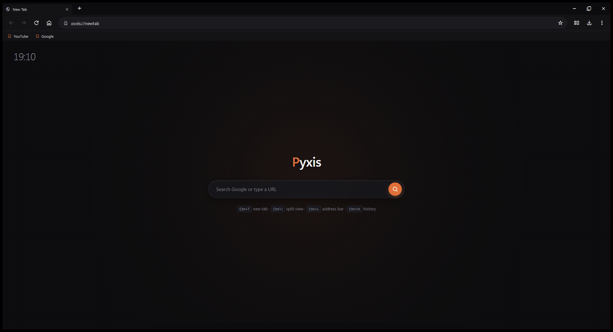

Everything a browser needs, nothing it doesn't. Every surface stays quiet so the web stays loud.
Tab width recalculates live — 220px down to 46px icon-only. Below 75px the close button hides, below 55px the title does. Overflow scrolls.
Ctrl+\ opens a second pane beside the first — independent navigation, ember ring marks the focused side.
EasyList + EasyPrivacy rules fetched at startup and applied in the network layer. Badge in the menu shows it working.
One switch in pyxis://settings re-themes the shell,
internal pages and sites via prefers-color-scheme.
Ctrl+Shift+N — violet-tinted tabs on an isolated profile. History, cookies and cache are dropped on close.
Ctrl+Shift+B toggles the strip; star button saves pages, persisted to local JSON. Uniform ember bookmark marks.
Ctrl+H opens pyxis://history — searchable
timeline, per-entry delete, clear-all, open-in-split.
Ctrl+J drops a flyout with live progress bars for active downloads and a finished-files list.
Ctrl+T Ctrl+\ Ctrl+L Ctrl+H Ctrl+J Ctrl+Shift+B F5 — full control without the mouse.